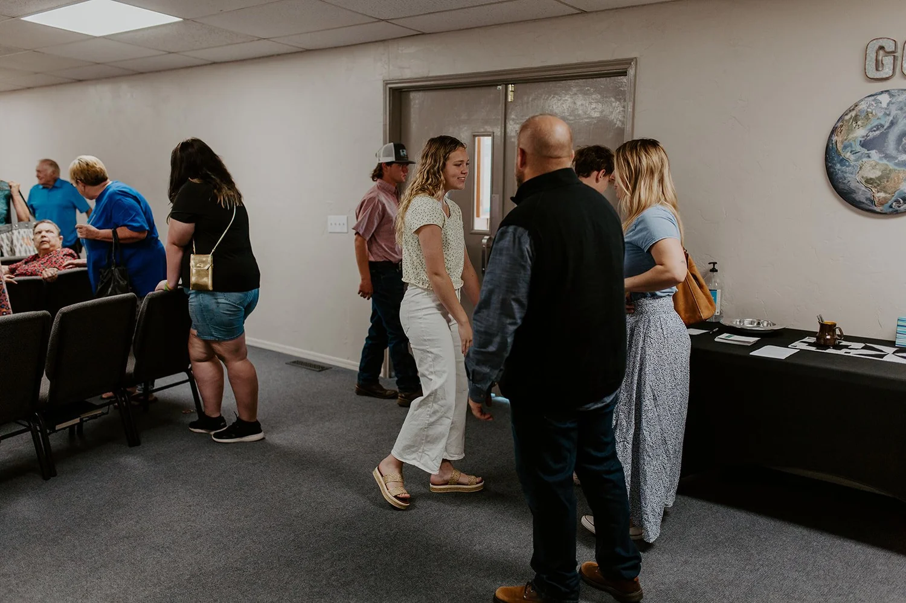

This is Hillside
Rooted in faith.
Growing in community.
Our story began in 1961, when a group of Christ followers planted a church in the Hillside community north of McLoud.

Our story continues with you
Following Jesus.
Living life together.
Hillside is a family learning to trust Jesus, build one another up, and become more devoted to Him. We know what it is to be new, and we welcome you to join us.
Our mission is to build a community of devoted Christ followers and share the good news of the gospel.
Come meet usWhat we believe
Our foundation
is Jesus Christ.
We hold to the Bible as God’s inerrant Word and the foundational statements of the Baptist Faith & Message. Jesus died for our sins, was buried, and rose again. He is our living Savior and Lord.
We worship, disciple, and serve together as a local church, sharing the truth and love of the gospel.
Baptist Faith & Message Explore the Romans RoadFaith in action
A heart for
our neighbors.
And the world.
Hillside supports local, national, and international missions through giving and the Cooperative Program. We pray, give, and take opportunities to go and serve.
Discover the ministry partnerships listed on our church website, or connect with us to learn how to get involved.
Mission partnerships Find a way to serveYour next Sunday starts here